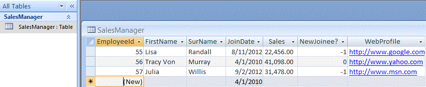
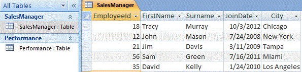
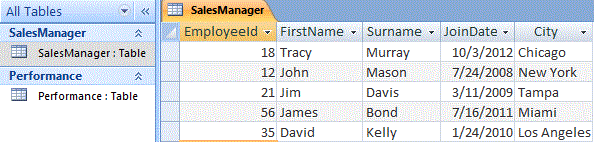
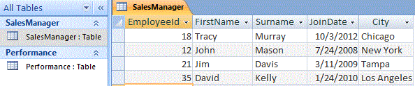
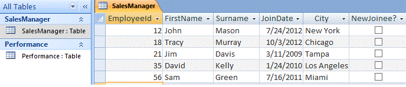
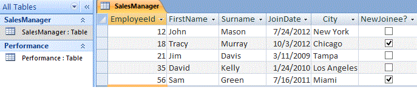

Image 4a
Connecting to Microsoft Access Database from Excel VBA, using DAO Object Model
Microsoft Access: Data Access Objects Library (DAO), Connect with Access Databases from Excel using VBA.
Part 1 of 3
Microsoft Access: Data Access Objects Library (DAO), Connect with Access Databases from Excel using VBA
1. Connecting to Microsoft Access Database from Excel VBA, using DAO Object Model.
3. Microsoft Access DAO Object Model: Import or Export Data from Access to Excel.
----------------
Also Read:
Microsoft Access: ActiveX Data Objects (ADO), Connect with Access Databases from Excel using VBA.
-----------------------------------------------------------------------------------
Contents:
Connect with Databases using DAO, RDO and ADO Objects
DAO Objects & Programming model
The DBEngine object & Workspace Object
Recordset & Records of a DAO Database Table
-----------------------------------------------------------------------------------
To connect with other databases, when working in VBA, you can use either DAO (Data Access Objects), RDO (Remote Data Objects) or ADO (ActiveX Data Objects). After connecting to a database, you can manipulate its data. DAO, RDO and ADO are data access interfaces ie. they are object and programming models used to access data. Earlier, DAO was used to interface with local databases (viz. MS Access), RDO was used to interface with large databases such as Oracle and SQL Server. ADO was their replacement to interface with all types of data sources. Both DAO and ADO are commonly used while connecting to Microsoft Access Database.
This section explains using the DAO Objects & Programming model to Connect with Access Databases from Microsoft Excel, the DBEngine object, Workspace Object & Workspaces Collection, DAO Databases, Tables of a DAO Database, Fields / Columns of a Table, Recordset & Records of a DAO Database Table, with practical examples.
Connect with Databases using DAO, RDO and ADO Objects
To connect with other databases, when working in VBA, you can use either DAO (Data Access Objects), RDO (Remote Data Objects) or ADO (ActiveX Data Objects). After connecting to a database, you can manipulate its data.
DAO, RDO and ADO are data access interfaces ie. they are object and programming models used to access data. Earlier, DAO was used to interface with local databases (viz. MS Access), RDO was used to interface with large databases such as Oracle and SQL Server. ADO was their replacement to interface with all types of data sources. Both DAO and ADO are commonly used while connecting to Microsoft Access Database. DAO is native to Access, the DAO object library is the default reference in Access 2007 and the library will be existing when you use Access (ADO object library was the default reference in Access 2000 and 2002, whereas DAO returned as the default object library with Access 2003 after being the default in Access 97 earlier). DAO integrates well with Access databases and provides faster access. ADO provides access to a wider variety of data sources than DAO, besides Access. ADO has succeeded DAO and is the latest data access technology, is simpler and more flexible, and interfaces with Microsoft's powerful data access technology of OLE DB. In ADO the objects are less than in DAO, and it contains more properties, methods and events. ADO/OLE DB is recommended for new projects but it might not be worthwhile to convert DAO code to ADO for existing projects.
ADO creates a reference to the database using the Connection object, to connect to the data source. You use the Open and Close methods to open and close a Connection object. DAO creates a reference to the database using the database object, to connect to the data source.
In Microsoft Access, Recordset objects are used to access and manipulate data in a database. A Recordset object represents a set of records in a database table, or a set of records returned from running a query. Both DAO and ADO libraries have a Recordset object, though the methods, properties, and options of the respective object is different. A Record object is one row of data in a Recordset. A Recordset object has a Fields collection which contains all the Field objects, where each Field object represents a column in the Recordset. In other words, each record represents a row of data and contains many fields, and each field corresponds to a column in the database table.
In your VBA code, you should ideally precede the object name by its program ID (ProgID) prefix, which in ADO is "ADODB" and in DAO is "DAO". Many objects, for example the Recordset object, have similar names in both DAO and ADO and it is advisable to have explicit references in your project. This becomes a must if you have included references to both the DAO and ADO libraries in your VBA project, else the object library mentioned first in the References list will prevail, resulting in confusion in the vba code.
While instantiating the Recordset object, you should use:
Dim daoRecSet As DAO.Recordset
Dim adoRecSet As ADODB.Recordset
instead of:
Dim RecSet As Recordset
DAO Objects & Programming model
DAO (Data Access Objects) is an object-oriented data access interface, used to connect to and access databases. It was the first Objects & Programming model which used the Microsoft Jet database engine, and is optimized to work Microsoft Access files (.mdb). The objects and collections in the DAO object hierarchy are used to connect to a database, access and manipulate its data and database structure.
A database engine is the underlying software component of a database used to manipulate its data. DAO Object Model by default uses the Microsoft Jet database engine for data access. ODBCDirect (which came after ODBC) allowed DAO to access ODBC data sources directly without using the Jet database engine. In this section we will illustrate connecting to Microsoft Access Database using DAO with the Jet engine. Prior to Access 2007, Access used the Microsoft (JET) engine, but with Access 2007 the new and improved ACE engine has succeeded and replaced JET. The ACE engine is fully backward-compatible so that it can be used with the .accdb files (Access 2007) and the earlier .mdb files.
Automating Access from Excel: You can connect to and access a database using DAO, from external applications which support automation (viz. MS Excel, MS Word, etc.), and in this section we show how to do this from Microsoft Excel by using VBA. With automation you can control another application (MS Access) within your host application (MS Excel) without any manual intervention. Automation is used typically to run macros or queries from Excel to connect to or create or manipulate MS Access database and its structure, to access and manipulate MS Access data and reports, to import data from MS Access to Excel for creating charts and pivot tables and otherwise use the data for calculations and analysis.
ODBC (Open Database Connectivity):
ODBC (Open Database Connectivity) is an interface which enables an application to connect and access a relational database, using the SQL query syntax. An ODBC database is a DBMS (Database Management System) for which there is an appropriate ODBC driver (examples of DBMS include SQL Server, Oracle, AS/400, Foxpro, Microsoft Access). The ODBC Driver is a software that resides between the ODBC Client (which is the front-end application wherein the driver is loaded) and the DBMS (wherein the data is stored for access), and it translates the command into a format that is understood by the DBMS. DAO Object Model uses the Microsoft Jet database engine and is optimized to work Microsoft Access files (.mdb), but ODBC databases can also be accessed with DAO and the Microsoft Jet database engine. A database engine is the underlying software component of a database used to manipulate its data. Jet (Joint Engine Technology) is used by Microsoft Access as its database engine.
OLE DB and ODBC:
OLE DB was intended as a successor to improve on ODBC by providing an enhanced and faster interface for data access. OLE DB is not bound to the SQL language like ODBC and it supports all forms of data sources (ie. relational and non-relational data sources including mainframe and hierarchical databases, e-mail and file systems, text and graphical data, custom business objects, ...) whereas ODBC was limited to relational databases. OLE DB was complex to be used directly with Visual Basic and Microsoft's ADO (ActiveX Data Objects) Object Model was introduced which interfaces with an OLE DB provider and enables an application (viz. Excel) to access and manipulate data from a database (viz. MS Access).
ODBC vs DAO, ADO vs DAO:
When working with ODBC data sources, use ODBC. With ODBC you can access any data source for which there is an appropriate ODBC driver for the database you want to access. Examples of ODBC databases include Oracle, Microsoft SQL Server, Microsoft Visual FoxPro, IBM DB2, Microsoft Access. When working with Microsoft Jet (.mdb) databases, using DAO will be more efficient. Examples of Microsoft Jet databases include Micorsoft Access, Microsoft SQL Server, Paradox. DAO Object Model uses the Microsoft Jet database engine and is optimized to work Microsoft Access files (.mdb), but ODBC databases can also be accessed with DAO and the Microsoft Jet database engine when you want the Jet database engine's speed and DAO's extra functionality. DAO precedes ADO and ODBC precedes OLE DB. ADO/OLE DB is recommended for new projects but it might not be worthwhile to convert DAO code to ADO for existing projects.
Add a reference to the DAO Object Library
To use DAO in your VBA project, you must add a reference to the DAO Object Library in Excel (your host application) by clicking Tools-References in VBE, and then choose an appropriate version (mostly, you should choose the highest version number), which is "Microsoft DAO 3.6 Object Library" for Access 2000 onwards.
The highest level object in the DAO object model is the DBEngine object, and it contains all objects in the hierarchy of DAO objects. There can only be one DBEngine object and there is no collection of which it is an element of. The DBEngine object has many properties and methods, and contains 2 collections - the Workspaces collection and the Errors collection. You can configure the database engine with properties and methods provided by the DBEngine object. A database engine is the underlying software component of a database used to manipulate its data. You can refer to DBEngine directly without explicitly declaring an object variable of type DBEngine.
Workspace Object & Workspaces Collection
Create a Workspace object to define a user session by name, in which a user performs all database operations by using the Microsoft Access database engine. The Workspace object allows you to open multiple databases or connections in a session, and you can open additional sessions with the Workspace object. A Workspace session starts on creation of a new Workspace object and ends when the Workspace object Close method is used. Multiple sessions (ie. workspace objects) are specifically useful when you want to perform operations as different users or when you want to manage separate and independent operations in each session. All active and unhidden workspace objects are called the Workspaces collection, which is contained in the DBEngine object. In DAO, when you open databases, they automatically exist within the default workspace which is the first workspace in the Workspaces collection. A default workspace, DBEngine.Workspaces(0), is automatically created when a Workspace object is first referred to or used, with the name as "#Default Workspace#", and if security is not enabled with username as "admin" (if security is implemented then username is set to the name of the user who logs on).
You can use the CreateWorkspace method to create a Workspace object. It is not necessary to append a Workspace object to the Wokspaces collection after creating it, and in this case you will need to refer it by the object variable used in the CreateWorkspace method. It will be required to append a Workspace object to the Wokspaces collection after creating it, if you want to refer to it from the Workspaces collection by its ordinal number or Name viz. DBEngine.Workspaces(0) or DBEngine.Workspaces("WorkspaceObjectName") or DBEngine.Workspaces![WorkspaceObjectName]. All defined DAO Workspace objects appended to the collection comprise the Workspaces collection. There are 2 types of Workspace objects, as defined by WorkspaceTypeEnum Enumeration in the CreateWorkspace method - (i) Microsoft Jet Workspace objects (type - 'dbUseJet') which creates a Microsoft Access workspace; and (ii) ODBCDirect workspaces (type - 'dbUseODBC') which are not supported in Microsoft Office Access 2007. In this section we will discuss only the Microsoft Jet Workspace objects.
By default the DBEngine.DefaultUser Property is set to "Admin" and the DBEngine.DefaultPassword Property is set to a zero-length string ("") and the default Workspace object's user and password are defined accordingly. When you start Access or access an Access database with vba, all users automatically log-in with the default name "Admin" and the password of zero-length string (""), but to access a database in a secured system (ie. a secured Access Database) users must provide a username and a password (if a password has been assigned to the user). In a secured system, for the default workspace you set the DefaultUser and DefaultPassword properties (for the DBEngine object), and after the default session has been initialized, additional sessions can be created with user names and passwords. Note that password is case-sensitive but not the username. In this section we do not go into further details of accessing a secured Microsoft Access database.
DBEngine.CreateWorkspace Method
Use the DBEngine.CreateWorkspace Method to create a new Workspace object. Syntax: DBEngineObject.CreateWorkspace(Name, UserName, Password, UseType). All arguments, except UseType, are mandatory. In the Name argument, specify a unique Workspace name for a session. In the UserName argument, specify the name of the user for identification. In the Password argument, you are required to enter a password for the Workspace object with a maximum of 20 characters. The UseType argument specifies one of the WorkspaceTypeEnum values: (i) dbUseJet - (Microsoft Jet Workspace objects) which creates a Microsoft Access workspace, and is also the default; and (ii) dbUseODBC - for ODBCDirect workspaces which are not supported in Microsoft Office Access 2007.
In DAO, when you open databases, they automatically exist within the default workspace which is the first workspace in the Workspaces collection. You need to use the DBEngine.CreateWorkspace Method only to create a second workspace which is seldom required.
Example 1: DAO WorkSpace Object & Workspaces Collection.
1. Create a new Workspace object, using the CreateWorkspace method, and append to the Workspaces collection.
2. Access properties of all workspace objects (ie. default workspace and the newly created workspace).
Sub AccessDAO_CreateWorkspace_1()
'Create a new Workspace object, using the CreateWorkspace method, and append to the Workspaces collection.
'Access properties of all workspace objects (ie. default workspace and the newly created workspace).
'To
use DAO in your Excel VBA project, you must add a reference to the DAO
Object Library in Excel (your host application) by clicking
Tools-References in VBE.
Dim strMyPath As String, strDBName As String, strDB As String
Dim wrkSpace As DAO.Workspace, wrkSpaceNew As DAO.Workspace
Dim prpWrkSpace As DAO.Property
'create a new Microsoft Jet Workspace, with the default type of dbUseJet:
Set wrkSpaceNew = DBEngine.CreateWorkspace("newWS", "admin", "", dbUseJet)
'append the new workspace to the Workspaces collection:
DBEngine.Workspaces.Append wrkSpaceNew
'return the number of workspace objects in the Workspaces collection (returns 2 - default & new workspace):
MsgBox DBEngine.Workspaces.count
'access properties of all workspace objects (ie. default workspace and the newly created workspace):
For Each wrkSpace In DBEngine.Workspaces
'workspace name (returns "#Default Workspace#" & "newWS"):
MsgBox "Workspace Name: " & wrkSpace.Name
'username property setting:
MsgBox wrkSpace.UserName
'properties of workspace object:
For Each prpWrkSpace In wrkSpace.Properties
MsgBox "Property Name: " & prpWrkSpace.Name
Next prpWrkSpace
Next wrkSpace
'returns the name of the default Workspace, ie. "#Default Workspace#":
MsgBox DBEngine.Workspaces(0).Name
'because
the Workspace object has been appended to the Wokspaces collection
after creating it, we can refer to it from the Workspaces collection by
its ordinal number or Name (returns "newWS"):
MsgBox DBEngine.Workspaces("newWS").Name
'if
the Workspace object had not been appended to the Wokspaces collection
after creating it, in this case you would have had to refer it by the
object variable used in the CreateWorkspace method (returns "newWS"):
MsgBox wrkSpaceNew.Name
'close the objects:
wrkSpaceNew.Close
'destroy the variables:
Set wrkSpace = Nothing
Set wrkSpaceNew = Nothing
Set prpWrkSpace = Nothing
End Sub
DAO Workspace Object Methods
DAO Workspace Object Methods: The Close Method is used to close an open Workspace. CreateDatabase method is used to create a new database and the OpenDatabase method is used to open an existing database. To manage transaction processing during a session (ie. when a series of database changes made in a session are treated as one unit), you have three transaction methods of BeginTrans, CommitTrans and Rollback. The OpenConnection Method, available only in an ODBCDirect workspace, is used to open a connection to an ODBC data source. Note that Microsoft Office Access 2007 does not support ODBCDirect workspaces.
DBEngine.OpenDatabase Method
Use the DBEngine.OpenDatabase Method to open a Database, as specified by its name/path. A reference to the Database object variable (to which the database is assigned) is returned by this method, and the database is not actually opened in the Microsoft Access window. If you open a database object without specifying a workspace, it will exist within the default workspace: DBEngine.Workspaces(0). Syntax: DBEngineObject.OpenDatabase(Name, Options, ReadOnly, Connect). Name argument is mandatory while all other arguments are optional. In the Name argument you will specify the database file name and full path, which you want to open. In the Options argument, you can specify False which is the Default and opens the database in shared mode while specifying True opens the database in exclusive mode. In the ReadOnly argument specifying False (default) will open the database with read-write access and specifying True will open in read-only. Connect argument is used to specify connection information (ex. password).
DAO Workspace.OpenDatabase Method
Use the DAO Workspace.OpenDatabase Method to open a Database, as specified by its name/path, in the specified Workspace object. A reference to the Database object variable (to which the database is assigned) is returned by this method, and the database is not actually opened in the Microsoft Access window. Syntax: WorkspaceObject.OpenDatabase(Name, Options, ReadOnly, Connect). The arguments are similar to as in the DBEngine.OpenDatabase Method, explained above.
DAO DBEngine.CreateDatabase Method
Use the DAO DBEngine.CreateDatabase Method to create, open and save a new Database. A reference to the Database object variable (to which the new database is assigned) is returned by this method. Note that this method creates a new empty database, which you will need to structure and enter content thereafter. If you create a database object without specifying a workspace, it will exist within the default workspace: DBEngine.Workspaces(0). Syntax: DBEngineObject.CreateDatabase(Name, Locale, Option). Name and Locale arguments are mandatory. In the Name argument (max 255 characters) you will specify the file name and full path of the database which is being created. The Locale argument specifies a collating order for the database (this is equated with the Database.CollatingOrder Property which specifies the database sort order sequence) ie. the character set to be used to determine how database values will be sorted. Specifying the constant "dbLangGeneral" for this argument means creating a database which will support sorting for "English, German, French, Portuguese, Italian, and Modern Spanish". A password for the new Database can also be created in concatenation with the constant specified in the Locale argument viz. dbLangGeneral & ";pwd=123", where password is "123". The Option argument specifies a constant to determine the version for the data format and if the database should be encrypted, and not specifying a constant will create an un-encrypted database.
DAO Workspace.CreateDatabase Method
Use the DAO Workspace.CreateDatabase Method to create, open and save a new Database. A reference to the Database object variable (to which the new database is assigned) is returned by this method. Note that this method creates a new empty database, which you will need to structure and enter content thereafter. This method creates a new Database and opens it in the specified workspace object. Syntax: Workspace.CreateDatabase(Name, Locale, Option). The arguments are similar to as in the DBEngine.CreateDatabase Method, explained above.
Example 2: Open an existing Database, Create a new Database.
1. Open an existing Database using the DAO OpenDatabase Method.
2. Create a new Database using the DAO CreateDatabase Method.
3. Return Databases and enumerate their properties in a Workspace.
Sub AccessDAO_OpenDatabaseCreateNewDatabase_2()
'Create
a New Microsoft Jet Workspace; Open an existing Database using the DAO
OpenDatabase Method; Create a new Database using the DAO CreateDatabase
Method; Return Databases and enumerate their Properties in a Workspace;
'To
use DAO in your Excel VBA project, you must add a reference to the DAO
Object Library in Excel (your host application) by clicking
Tools-References in VBE.
Dim strMyPath As String, strDBName As String, strDB As String, strDBNameNew As String, strDBNew As String
Dim daoDB As DAO.Database, daoDBNew As DAO.Database, daoDBS As DAO.Database
Dim wrkSpaceNew As DAO.Workspace
Dim prpDB As DAO.Property
'---------------
'SET DATABASE NAMES (EXISTING & NEW):
'your data source with which to establish connection - ENTER the existing MS Access Database Name:
strDBName = "SalesReport.accdb"
'get path / location of the database, presumed to be in the same location as the host workbook:
strMyPath = ThisWorkbook.Path
'set the string variable to the Database:
strDB = strMyPath & "\" & strDBName
'name of the new MS Access Database being created:
strDBNameNew = "SalesReportNew.accdb"
'set the string variable to the new Database:
strDBNew = strMyPath & "\" & strDBNameNew
'---------------
'CREATE A NEW MICROSOFT JET WORKSPACE:
'create a new Microsoft Jet Workspace, with the default type of dbUseJet:
Set wrkSpaceNew = DBEngine.CreateWorkspace("newWS", "admin", "", dbUseJet)
'append the new workspace to the Workspaces collection:
DBEngine.Workspaces.Append wrkSpaceNew
'---------------
'OPEN AN EXISTING DATABASE:
'open the database in the default workspace:
'Set daoDB = DBEngine.Workspaces(0).OpenDatabase(strDB)
'If you open a database object without specifying a workspace, it will exist within the default workspace:
'Set daoDB = DBEngine.OpenDatabase(strDB)
'If you open a database by specifying a workspace object, it will exist within the specified workspace:
Set daoDB = wrkSpaceNew.OpenDatabase(strDB, True)
'alternatively:
'Set daoDB = DBEngine.Workspaces("newWS").OpenDatabase(strDB, False)
'---------------
'CREATE A NEW DATABASE:
'If you create a database object without specifying a workspace, it will exist within the default workspace:
Set daoDBNew = DBEngine.CreateDatabase(strDBNew, dbLangGeneral)
'alternatively, to create a new database and open in the new Workspace object:
'Set daoDBNew = wrkSpaceNew.CreateDatabase(strDBNew, dbLangGeneral)
'---------------
'ACCESS DATABASES IN EACH WORKSPACE (DEFAULT AND NEW WORKSPACE):
'return the number of database objects in the new Workspace:
MsgBox "No of database objects in the new Workspace: " & wrkSpaceNew.Databases.count
'access databases in the new workspace:
For Each daoDBS In wrkSpaceNew.Databases
MsgBox daoDBS.Name
For Each prpDB In daoDBS.Properties
MsgBox "Property Name: " & prpDB.Name
Next prpDB
Next daoDBS
'return the number of database objects in the default Workspace:
MsgBox "No of database objects in the default Workspace: " & DBEngine.Workspaces(0).Databases.count
'access databases in the default workspace:
For Each daoDBS In DBEngine.Workspaces(0).Databases
MsgBox daoDBS.Name
For Each prpDB In daoDBS.Properties
MsgBox "Property Name: " & prpDB.Name
Next prpDB
Next daoDBS
'---------------
'close the objects:
daoDB.Close
daoDBNew.Close
wrkSpaceNew.Close
'destroy the variables:
Set daoDB = Nothing
Set daoDBNew = Nothing
Set daoDBS = Nothing
Set wrkSpaceNew = Nothing
Set prpDB = Nothing
End Sub
Return a Reference to the Current Database - CurrentDb Method
Use the CurrentDb Method to return a reference to the database which is currently open in the Microsoft Access window, from vba code. The method returns a database object, without the need to specfy the database name. You can use other DAO objects with the database object variable returned by this method. A reference to the current database is provided by the first member of the Databases collection. The reference pointed to the current database by using the syntax DBEngine(0)(0) can also be used but this syntax refers to the open copy of the current database, whereas with the CurrentDb method you can create 'multiple database object variables' referring to the current database because this method creates a new instance of the current database making it amenable for multi users. However, it is much slower to use CurrentDb than using DBEngine(0)(0). Note that another Database can be opened and worked upon simultaneously, using the OpenDatabase method, while the current database is already open in the Microsoft Access window.
Example 3: CurrentDb Method - return a reference to the currently open database.
Sub AccessDAO_ReferCurrentDatabase_3()
'CurrentDb Method - return a reference to the currently open database.
'To
use DAO in your Excel VBA project, you must add a reference to the DAO
Object Library in Excel (your host application) by clicking
Tools-References in VBE.
Dim strMyPath As String, strDBName As String, strDB As String
Dim daoCDB1 As DAO.Database, daoCDB2 As DAO.Database, daoDB As DAO.Database
Dim recSet As DAO.Recordset
'---------------
'RETURN MULTIPLE INSTANCES OF THE DATABASE CURRENTLY OPEN IN THE MICROSOFT ACCESS WINDOW:
'assign current database reference to multiple object variables of type Database:
Set daoCDB1 = CurrentDb
Set daoCDB2 = CurrentDb
MsgBox daoCDB1.Name
MsgBox daoCDB2.Name
'refer
DAO TableDef Object in current database - you need to first assign the
current database reference to an object variable (ex. daoCDB2):
Dim daoTblDef As DAO.TableDef
Dim fld As DAO.Field
Set daoTblDef = daoCDB2.TableDefs("SalesManager")
For Each fld In daoTblDef.Fields
MsgBox fld.Name
Next fld
'----
'USE CurrentDb DIRECTLY WITH A RECORDSET OBJECT:
'CurrentDb
can be used directly with a Recordset object, while in most other DAO
objects you need to first assign the current database reference to an
object variable as above.
Set recSet = CurrentDb.OpenRecordset("SalesManager", dbOpenDynaset)
'displays first 3 fields of the first record:
MsgBox recSet.Fields(0)
MsgBox recSet.Fields(1)
MsgBox recSet.Fields(2)
'---------------
'OPEN
ANOTHER DATABASE USING THE OpenDatabase METHOD, TO WORK ON
SIMULTANEOUSLY, WHILE THE CURRENT DATABASE IS ALREADY OPEN IN THE
MICROSOFT ACCESS WINDOW:
'your data source with which to establish connection - ENTER the MS Access Database Name:
strDBName = "SalesReport.accdb"
'get path / location of the database, presumed to be in the same location as the host workbook:
strMyPath = ThisWorkbook.Path
'set the string variable to the Database:
strDB = strMyPath & "\" & strDBName
'open the database in the default workspace:
Set daoDB = DBEngine.OpenDatabase(strDB)
MsgBox daoDB.Name
'---------------
'close the objects:
recSet.Close
daoCDB1.Close
daoCDB2.Close
daoDB.Close
'destroy the variables:
Set daoCDB1 = Nothing
Set daoCDB2 = Nothing
Set daoDB = Nothing
Set daoTblDef = Nothing
Set fld = Nothing
Set recSet = Nothing
End Sub
TableDef Object and TableDefs collection
A TableDef object, with its properties and methods, is used to manipulate a table definition. With a TableDef object you can: create a new table (Database.CreateTableDef Method); create or add a new Field in a table (TableDef.CreateField Method); create a new Index (TableDef.CreateIndex Method); create a new Recordset and append it to the Recordsets collection (TableDef.OpenRecordset Method); update a linked table's connection information (TableDef.RefreshLink Method); set or return information about a linked table (TableDef.Connect Property); set or return the name of a linked table (ableDef.SourceTableName Property); set or return validation value/rule for a field's data (TableDef.ValidationRule Property); set or return the text message displayed when the field value does not conform to the ValidationRule (TableDef.ValidationText Property); and so on.
All stored TableDef objects in a database are referred to as the TableDefs collection. You create a new TableDef object using the Database.CreateTableDef Method. It is required to append a TableDef object to the TableDefs collection after creating it, using the DAO TableDefs.Append Method. You can refer to a TableDef object in the TableDefs collection by its ordinal number or Name viz. TableDefs(0) or TableDefs("TableDefObjectName") or TableDefs![TableDefObjectName].
Database.CreateTableDef Method
Use the Database.CreateTableDef Method to create a new TableDef object. Syntax: DatabaseObject.CreateTableDef(Name, Attributes, SourceTableName, Connect). All arguments are optional to specify. The Name argument sets the name of the TableDef object, which can be a maximum of 64 characters. The Attributes argument sets a value indicating characteristic(s) of the TableDef object. The Attributes Property is read/write for a TableDef object till it is appended to its collection. The SourceTableName argument specifies the name of a linked or the base table that is the original data source in an external database. The Connect argument is a String value, which provides information of a TableDef object's linked table or an open database source, consisting of a database type specifier and a database path.
Note that it is required to define one Field atleast before you can append a TableDef object to the TableDefs collection. Use the TableDefs.Delete Method to delete a TableDef object from the TableDefs collection.
A Field object corresponds to a column of data of similar data type and properties. The Index, QueryDef, Relation and TableDef objects all have a Fields collection, which represents all stored Field objects as specified in the respective object. The Recordset object also has a Fields collection, which represents all stored Field objects in a record or a row of data. A field object has its own properties & methods by which it is manipulated.
Create a new Field
TableDef.CreateField Method
Use the TableDef.CreateField Method to create a new Field object. Syntax: TableDefObject.CreateField(Name, Type, Size). All arguments are optional to specify. The Name argument specifies a name for the new Field. The Type argument sets the data type of the Field, as indicated by a constant. The Size argument determines the maximum size of a Field. For a Field with character data (except Memo), size determines the maximum number of characters; for numeric fields, it is the maximum size in bytes (of storage). Text fields can be set upto a maximum of 255 characters for a Microsoft Access database, whereas for non-Text fields the size is automatically determined by their Type property. Not specifying the Size will default the Field size to as permissible by the database. For Memo or Long Binary Fields use the Field.FieldSize Property to determine the size in the number of bytes used in the database, whereas use the Size property for all other Field data types.
You can use the CreateField method to add a new field to an Index or Relation object. To add a field to an Index object, use the DAO Index.CreateField Method, Syntax: IndexObject.CreateField(Name, Type, Size). The type and size arguments are not supported for an Index object, and are ignored in this case. To add a field to a Relation object, use the DAO Relation.CreateField Method, Syntax: RelationObject.CreateField(Name, Type, Size). The type and size arguments are not supported for a Relation object, and are ignored in this case.
Fields Collection Properties & Methods
Count the number of Fields
The Count property of the fields collection determines the number of fields in a collection, wherein numbering for members of a collection begins with zero. If you have seven fields in a Recordset, using RecordsetObject.Fields.count will return 7, and RecordsetObject.Fields(0) will return the value of the first field [OrdinalPosition of the first field is 0].
Access Fields by their ordinal position or Name property
You can Access Fields by their ordinal position or Name property viz. Recordset.Fields.(Name/OrdinalPosition). Recordset.Fields(0).Name returns the Name of the first field, and Recordset.Fields(0).Value returns the content in the first field. The Value property of the Field object is its Default property viz Recordset.Fields(0) is the same as Recordset.Fields(0).Value and will return the first fields's value.
Examples: To reference a field named "FirstName", which is the second field in the table, you can use any of the following:-
RecordsetObject.Fields("FirstName")
RecordsetObject.Fields(1)
RecordsetObject![FirstName]
DAO Fields.Append Method
To add or append a new field to the Fields Collection of a TableDef or an Index object, use the DAO Fields.Append Method. To add a field to a table, use the Syntax: TableDefObject.Append(FieldObject). To add a field to an Index, use the Syntax: IndexObject.Append(FieldObject). The FieldObject argument mentions the Field Object variable which is being appended and is necessary to specify.
DAO Fields.Delete Method
To delete a field from the Fields Collection, use the DAO Fields.Delete Method. To delete a field from a table, use the Syntax: TableDefObject.Fields.Delete(Name). The Name argument mentions the name of the Field which is being deleted and is necessary to specify. Note that once an index referencing a field has been created, that Field cannot be deleted from a Fields collection of a TableDef object.
DAO Fields.Refresh Method
The relative position of a Field object within the Fields collection is usually the order in which the field has been appended in the collection, the first appended field at first position will have an OrdinalPosition of 0 (zero), the second appended field at second position will have an OrdinalPosition of 1, and so on, and this position can be changed (or returned) by using the DAO Field.OrdinalPosition Property. A change in the ordinal position of a Field may not change the order of the Fields in the collection unless the DAO Fields. Refresh Method is used. The Refresh method is particularly required to be used in a multi-user environment wherein different users might be making changes in the database, in which case only those objects are contained when you have referred to the collection initially without reflecting any subsequent changes made by other users, and the collection will get updated only on using the Refresh method.
Field Object Properties
Field properties are used to determine or return the name, size, type and characteristics of a Field. Some of these properties are elaborated below.
DAO Field.Name Property
Use the DAO Field.Name Property to set or return a Field's name. It is a String value not exceeding 64 characters. The property is read-only after the Field object is appended to the Fields collection, before which it is read/write.
DAO Field.Value Property
Use the Field.Value Property to return, enter or edit the data in a Field. This is the default property of a Field object viz. you can refer to a field object without specifying the value property. For example, entering "Lisa" in the field named "FirstName" can be done either as RecordSetObject.Fields("FirstName") = "Lisa" or as RecordSetObject.Fields("FirstName").Value = "Lisa".
DAO Field.OrdinalPosition Property
The relative position of a Field object within the Fields collection is usually the order in which the field has been appended in the collection, the first appended field at first position will have an OrdinalPosition of 0 (zero), the second appended field at second position will have an OrdinalPosition of 1, and so on, and this position can be changed (or returned) by using the DAO Field.OrdinalPosition Property. Note that this property uses "relative postion" so that if you have 3 fields and you change the OrdinalPosition property of these to 10, 12 & 15, then the field with OrdinalPosition value of 12 will be returned in an order relative to the others, ie. between the fields whose values have been set as 10 and 15.
The property is read-write for a Field object before it is appended to a Fields collection. After a Field object is appended, for Fields contained within a TableDef object it is read-write, and for fields contained within Recordset or QueryDef objects it is read-only, but the property is not supported for fields contained within Index & Relation objects.
DAO Field.Size Property
The Field.Size Property determines the maximum size of a Field. For a Field with character data (except Memo), size determines the maximum number of characters; for numeric fields, it is the maximum size in bytes (of storage). For Text fields you must set the Size property which can be set upto a maximum of 255 characters for a Microsoft Access database, whereas for non-Text fields the size is automatically determined by their Type property. Not specifying the Size will default the Field size to as permissible by the database. For Memo or Long Binary Fields use the Field.FieldSize Property to determine the size in the number of bytes used in the database, whereas use the Size property for all other Field data types.
The property is read-write for a Field object before it is appended to a Fields collection. After a Field object is appended, the property is supported for Fields contained within a TableDef object, Recordset object or QueryDef object, wherein it is read-only, but the property is not supported for fields contained within Index & Relation objects.
DAO Field.Type Property
Use the Type property to set or return the operational or data type of a Field. The value returned by this property is a constant which indicates the data type of a field. The property is read-only after the Field object is appended to the Fields collection or to any object, before which it is read/write.
Examples of data type constants that are supported by DAO, for the Type property, include:
dbBoolean (Boolean Value - Yes/No); dbChar (Char); dbCurrency (Currency); dbDate (Date); dbDouble (Double); dbGUID (GUID); dbInteger (Integer); dbBigInt (Big Integer); dbSingle (Single); dbLong (Long); dbMemo (Memo); dbText (Text); ....
DAO Field.Attributes Property
Use the DAO Field.Attributes Property to set (or return) the Field characteristics. The Field characteristic(s) is specified by a value or constant, which can be: dbAutoIncrField (to automatically increment the Field value to a unique Long integer); dbDescending (to sort Field values in a descending order - default sort order for a Field is Ascending if this attribute is not specified - this attribute is applicable only to an index field ie. to Fields collection of an Index); dbFixedField (dbFixedField specifies that the field has a fixed size - numeric fields have a Fixed field size by default - maps to ADO column attribute adColFixed); dbVariableField (valid only for text fields, it specifies a Variable Field size ie. the Text data type Field can store variable text lengths); dbUpdatableField (when the Field value can be updated or changed); dbHyperlinkField (hyperlink field, valid only for Memo field types); dbSystemField (these fields cannot be deleted).
To create an auto-increment field, set data type of field to Long and set Attributes property to dbAutoIncrField. An auto-increment field (also referred to as AutoNumber field) by default starts at 1 and increments sequentially and can be used aptly as a primary key field to automatically insert unique numbers in a field.
Set multiple attributes - sum the respective constants (using the plus "+" sign) to set multiple attributes, wherein any non-meaningful values get ignored without giving an error.
This property is read/write for a field before being appended to a collection. For a Field object after it is appended to a collection: for Fields contained within a TableDef object, the property is read/write; for Fields contained within an Index object, this property remains read-write until the TableDef object which contains the Index object is appended to a Database and then read-only thereafter; for Fields contained within a Recordset object or QueryDef object, the property is read-only; for Fields contained within a Relation object this property is not supported.
DAO Field.DefaultValue Property
Use the Field.DefaultValue Property to specify the default value to be entered in a Field automatically on creation of a new record. A text or an expression of String data type upto a maximum of 255 characters, can be specified as the default value. For AutoNumber and Long Binary fields, this property is not applicable.
The property is read-write for a Field object before it is appended to a Fields collection. After a Field object is appended, for Fields contained within a TableDef object it is read-write, and for fields contained within Recordset or QueryDef objects it is read-only, but the property is not supported for fields contained within Index & Relation objects.
DAO Field.Required Property
The Field.Required Property determines whether a field can accept null values. Setting the Property to False will allow null values in the field. Between an Index object and a Field object, set the Required property for the Field object because its validation for the Field object precedes that of an Index object.
The property is read-write for a Field object before it is appended to a Fields collection. After a Field object is appended, for Fields contained within a TableDef object it is read-write, and for fields contained within Recordset or QueryDef objects it is read-only, but the property is not supported for fields contained within Index & Relation objects.
DAO Field.AllowZeroLength Property
Setting the Field.AllowZeroLength Property to True will allow value for Text or Memo data type Fields to be set to an empty or zero-length string (""). Zero Length string vs Null value: Note that in Access when you specify a Zero Length string it means that you actually specify a value, and when you set the Required porperty to be True it means that the Field can have a Null value which means that NO value needs to be entered - for the user there is no visible difference between the two.
The property is read-write for a Field object before it is appended to a Fields collection. After a Field object is appended, for Fields contained within a TableDef object it is read-write, and for fields contained within Recordset or QueryDef objects it is read-only, but the property is not supported for fields contained within Index & Relation objects.
DAO Field.ValidationRule Property
Use the Field.ValidationRule Property to validate a field's data with a specified rule or condition. The property specifies a string value as a comparison like in a WHERE clause (as used in SQL statements) but does not use the WHERE word. If the field's value does not conform to the specified rule or condition, the error message (a string value) as specified by the ValidationText property gets displayed. Only databases using the Microsoft Access database engine support validation.
The property is read-write for a Field object before it is appended to a Fields collection. After a Field object is appended, for Fields contained within a TableDef object it is read-write, and for fields contained within Recordset or QueryDef objects it is read-only, but the property is not supported for fields contained within Index & Relation objects.
DAO Field.ValidationText Property
Validation Text specifies the error message (a string value) which gets displayed if the field's value does not conform to the specified rule or condition specified by the ValidationRule property.
The property is read-write for a Field object before it is appended to a Fields collection. After a Field object is appended, for Fields contained within a TableDef object it is read-write, and for fields contained within Recordset or QueryDef objects it is read-only, but the property is not supported for fields contained within Index & Relation objects.
Example 4a: Create Tables and Fields in a DAO Database.
Refer Image 4a as mentioned in the code.
1. Create a New Database;
2. Create & Append Tables (ie. TableDef objects);
3. Create & Append Fields;
4. Enumerate Tables in the Database and their Properties;
5. Enumerate Fields in a Table;
6. Delete Fields & Tables;
Image 4a
Sub AccessDAO_CreateTablesCreateFields_4a()
'Create a New Database;
'Create & Append Tables (ie. TableDef objects);
'Create & Append Fields;
'Enumerate Tables in the Database and their Properties;
'Enumerate Fields in a Table;
'Delete Fields & Tables;
'To
use DAO in your Excel VBA project, you must add a reference to the DAO
Object Library in Excel (your host application) by clicking
Tools-References in VBE.
Dim strMyPath As String, strDBName As String, strDB As String
Dim daoDB As DAO.Database
Dim daoTD As DAO.TableDef, daoTD1 As DAO.TableDef, daoTD2 As DAO.TableDef
Dim daoFld As DAO.Field
Dim daoPrp As DAO.Property
'---------------
'get path / location of the database, presumed to be in the same location as the host workbook:
strMyPath = ThisWorkbook.Path
'name of the new MS Access Database being created:
strDBName = "SalesReportNew.accdb"
'set the string variable to the new Database:
strDB = strMyPath & "\" & strDBName
'---------------
'CREATE A NEW MS ACCESS DATATABASE, TABLES AND FIELDS:
'Refer
Image 4a to view Tables & Fields (in "SalesManager" Table) of the
new Database ("SalesReportNew.accdb") after running below code, before
deleteing any table or field.
'Create
a New Database: If you create a database object without specifying a
workspace, it will exist within the default workspace:
Set daoDB = DBEngine.CreateDatabase(strDB, dbLangGeneral)
'Create Tables (ie. TableDef objects) named "SalesManager" and "Performance":
Set daoTD1 = daoDB.CreateTableDef("SalesManager")
Set daoTD2 = daoDB.CreateTableDef("Performance")
'Before you append the TableDef object to the TableDefs collection, you will create Fields and append them to the new TableDef object (Table named "SalesManager") created above:
With daoTD1
'create a new auto increment field, and set attribute:
'set
data type of field to Long, set Attributes property to dbAutoIncrField.
An auto-increment field (also referred to as AutoNumber field) by
default starts at 1 and increments sequentially and can be used aptly as
a primary key field to automatically insert unique numbers in a field.
.Fields.Append .CreateField("EmployeeId", dbLong)
.Fields("EmployeeId").Attributes = dbAutoIncrField + dbFixedField
'create a Text field, maximum 30 characters, and required.
Set daoFld = .CreateField("FirstName", dbText, 30)
daoFld.Attributes = dbVariableField
daoFld.Required = True
.Fields.Append daoFld
'Text field, allow zero length, and max 25 characters:
.Fields.Append .CreateField("SurName", dbText, 25)
.Fields("SurName").Required = True
.Fields("SurName").AllowZeroLength = True
'create a Date field with a validation rule and Validation Text:
Set daoFld = .CreateField("JoinDate", dbDate)
'specify a default value for the field:
daoFld.DefaultValue = "#04/01/2010#"
'validate the field's value, before it is set, with a specified rule or condition:
daoFld.ValidationRule = ">=#04/01/2010# and <=date()"
'specify the error message which gets displayed if the field's value does not conform to the specified rule or condition:
daoFld.ValidationText = "JoinDate should be on or after 04/01/2010 but within current date"
.Fields.Append daoFld
'Currency Field and required:
.Fields.Append .CreateField("Sales", dbCurrency)
.Fields("Sales").Required = True
'create a Boolean (Yes/No) field:
.Fields.Append .CreateField("NewJoinee?", dbBoolean)
'create a Hyperlink field, and set the attribute:
Set daoFld = .CreateField("WebProfile", dbMemo)
daoFld.Attributes = dbHyperlinkField + dbVariableField
.Fields.Append daoFld
End With
Set daoFld = Nothing
'Before you append the TableDef object to the TableDefs collection, you will create Fields and append them to the new TableDef object (Table named "Performance") created above:
With daoTD2
.Fields.Append .CreateField("FirstName", dbText)
End With
'Save/Append the tables "SalesManager" & "Performance" to the TableDefs collection:
daoDB.TableDefs.Append daoTD1
daoDB.TableDefs.Append daoTD2
'---------------
'ENUMERATE DATABASE TABLES AND PROPERTIES:
'return number of Tables in database:
MsgBox daoDB.TableDefs.count
'Enumerate Tables in the database and their properties:
For Each daoTD In daoDB.TableDefs
'Use
the Attributes property to ignore System and Hidden Tables. The
Attributes argument returns or sets a value indicating characteristic(s)
of the TableDef object. Note, that to check a specific attribute we
have used the logical AND operator for comparison of: (i) the TableDef
Attributes property and the dbSystemObject constant; and (ii) the
TableDef Attributes property and the dbHiddenObject constant. You can
alternatively do an equivalency test using numerical values of the
constants.
If ((daoTD.Attributes And dbSystemObject) Or (daoTD.Attributes And dbHiddenObject)) Then
Else
For Each daoPrp In daoTD.Properties
MsgBox "Table Name: " & daoTD.Name & " - Property Name: " & daoPrp.Name & ", Property Type: " & daoPrp.Type & ", Property Value: " & daoPrp.Value
Next
End If
'Alternate
If statement to ignore System and Hidden Tables: dbSystemObject
constant has a numerical value of -2147483646; dbHiddenObject constant
has a numerical value of 1;
'If daoTD.Attributes >= 0 And daoTD.Attributes <> 1 Then
'MsgBox "Table Name: " & daoTD.Name
'End If
Next
'---------------
'ENUMERATE TABLE FIELDS:
'return number of Fields in the Table named "SalesManager":
MsgBox daoTD1.Fields.count
'Enumerate Fields and return their name, type & size in the Table named "SalesManager":
For Each daoFld In daoTD1.Fields
MsgBox daoFld.Name & ", " & daoFld.Type & ", " & daoFld.Size
Next
'---------------
'DELETE FIELDS AND TABLES IN DATABASE:
'Delete a field in the Table named "SalesManager":
'daoTD1.Fields.Delete "SurName"
'Delete the Table (TableDef object) named "Performance" created above:
'daoDB.TableDefs.Delete daoTD2.Name
'or
daoDB.TableDefs.Delete "Performance"
'---------------
'close the objects:
daoDB.Close
'destroy the variables:
Set daoDB = Nothing
Set daoTD = Nothing
Set daoTD1 = Nothing
Set daoTD2 = Nothing
Set daoFld = Nothing
Set daoPrp = Nothing
End Sub
Recordset & Records of a DAO Database Table
After connecting to a database, you can manipulate its data. In Microsoft Access, Recordset objects are used to access and manipulate data in a database. A Recordset object represents a set of records in a database table, or a set of records returned from running a query. Both DAO and ADO libraries have a Recordset object, though the methods, properties, and options of the respective object is different. A Record object is one row of data in a Recordset. A Recordset object has a Fields collection which contains all the Field objects, where each Field object represents a column in the Recordset. In other words, each record represents a row of data and contains many fields, and each field corresponds to a column in the database table.
In your VBA code, you should ideally precede the object name by its program ID (ProgID) prefix, which in ADO is "ADODB" and in DAO is "DAO". Many objects, for example the Recordset object, have similar names in both DAO and ADO and it is advisable to have explicit references in your project. This becomes a must if you have included references to both the DAO and ADO libraries in your VBA project, else the object library mentioned first in the References list will prevail, resulting in confusion in the vba code.
While instantiating the Recordset object, you should use:
Dim daoRecSet As DAO.Recordset
Dim adoRecSet As ADODB.Recordset
instead of:
Dim RecSet As Recordset
DAO Recordset Types
There are five types of Recordsets:
1. A Table-type recordset is based on a Table and not on a query. A Table-type recordset is created only when working with a single non-linked table. Valid for Microsoft Access Jet workspaces only. You can use the Seek method (but not the Find Method) to search through this recordset (using a Table index), which is faster than using the Find method.
2. A Dynaset-Type recordset results from a query. The set of records can contain fields from one or more underlying tables or any linked table (ie. any table linked to the Access Database). The recordset gets dynamically updated and reflects any change made to the underlying records. After the recordset has been created it does not add any new record satisfying the criteria. This recordset type supports the Find method (but not the Seek method) to search through the recordset, which is however slower than the Seek method.
3. A Snapshot-type recordset shows the data as at the time when a snapshot is taken ie. when a recordset is created. The set of records can contain fields from one or more underlying tables or any linked table. This recordset type is a static copy of the records and does not get dynamically updated and does not reflect any change made to the underlying records. If a field value is changed in a record, it will not be updated dynamically like it gets done in a Dynaset-Type recordset and you will need to refresh the recordset to update. This recordset type is used to read data and searching through this recordset is very fast. This recordset type supports the Find method to search through the recordset.
4. A Forward-only-type recordset is identical to a snapshot-type wherein only scroll forward through records is possible.
5. A Dynamic-type recordset results from a query from one or more underlying tables. In this recordset you can add, change or delete records from a row-returning query. This recordset is similar to the Dynaset-Type except that after running a query the matching records added, deleted or edited in the underlying tables by other users also get automatically reflected in the recordset of this type. Valid for ODBCDirect workspaces only.
All active recordsets of a database are contained in the Recordsets collection, wherein a recordset gets appended to the collection when it is opened and gets removed from the collection when it is closed (using the Close method). Each recordset object contains a collection of the fields and a collection of the indexes in the underlying table.
DAO Recordset.Type Property
Use the Recordset.Type Property to set or return the type of Recordset, using the RecordsetTypeEnum constants or values. There are five settings: dbOpenTable (value-1, Table-type, for Microsoft Access workspaces only); dbOpenDynaset (value-2, Dynaset-type); dbOpenSnapshot (value-4, Snapshot-type); dbOpenForwardOnly (value-8, Forward-only type); dbOpenDynamic (value-16, Dynamic-type, for ODBCDirect workspaces only).
Create a new Recordset object
Create a Recordset object and append it to the Recordsets collection, using the OpenRecordset method. You can use the OpenRecordset method to open a Recordset that is based on a Table, SQL statement, stored or parameter query as detailed below. Arguments have the same meaning across the OpenRecordset methods.
DAO Database.OpenRecordset Method. Syntax: DatabaseObject.OpenRecordset(Name, Type, Options, LockEdit). In this method you pass the Table name to the method and use the Set operator to return the recordset.
Only the Name argument is mandatory to specify while other arguments are optional. The Name argument specifies the source of records and can be the name of a table or a query, or it can be an SQL statement. In the Type argument, specify one of the five types for the recordset by using the constants: dbOpenTable (Table-type); dbOpenDynaset (Dynaset-type); dbOpenSnapshot (Snapshot-type); dbOpenForwardOnly (Forward-only type); dbOpenDynamic (Dynamic-type). A Recordset created in a Microsoft Access local table without specifying the Type will default to Table-type. Executing the OpenRecordset method on a linked table or query, without specifying the Type, will default to Dynaset-type. In the Options argument you can specify one of the many constants representing the recordset's characteristics viz. specifying dbReadOnly opens a recordset as read-only, and so on. The LockEdit argument specifies a constant which determines the type of record locking used when a recordset is opened.
DAO TableDef.OpenRecordset Method. Syntax: TableDefObject.OpenRecordset(Type, Options). In this method you first get a reference to the Table (TableDefObject) and then use the Set operator to return the recordset.
DAO Recordset.OpenRecordset Method. Syntax: RecordsetObject.OpenRecordset(Type, Options). In this method you first get a reference to a Recordset Object and then use the Set operator. Refer Example 7 wherein this method is used to Filter Records.
Creating a Recordset, based on a stored query or a parameter query, using the QueryDef.OpenRecordset Method. For details on this method, refer section "Create and Exceute a Query".
Create a new record in a Database Table - use the AddNew & Update methods
DAO Recordset.AddNew method
Create a new record for a Recordset object, using the Recordset.AddNew method. Syntax: RecordsetObject.AddNew. When you use this method, the field's value is set to its default value and in the absence of a default value specification, it is set to Null. Ensure that after adding a new record using the AddNew method or after making any changes in a record using the Edit method, you must save the record and/or any changes to it by using the Update method BEFORE you perform any operation like move to another record or use the Edit or AddNew method again or close the recordset or set bookmark property for another record.
In DAO, after using the Update method, the current record will be the record which had focus before the AddNew method. Using the LastModified property (for a DAO recordset) returns a Bookmark pointing to the most recent added / modified record and setting the Bookmark property to this bookmark will make the new record as the current record.
When you add a record to a dynaset-type Recordset, using the AddNew method, the new record will appear at the end of the recordset disregrading the recordset's sorting if any. In this case you can re-create the recordset or use the ReQuery method to have the new record appear in its sorted position. When a record is added to a table-type Recordset, the new record appears in accordance with the recordset's index and in the absence of an index the new record will appear at the end of the recordset.
DAO Recordset.Update Method
Ensure that after adding a new record using the AddNew method or after making any changes in a record using the Edit method, you must save the record and/or any changes to it by using the Recordset.Update Method BEFORE you perform any operation like move to another record or use the Edit or AddNew method again or close the recordset or set bookmark property for another record. Syntax: RecordsetObject .Update(UpdateType, Force). Both arguments of UpdateType & Force are optional.
Recordset.LastModified Property
In Table-type or Dynaset-Type recordsets, a bookmark of the record which has most recently been added or changed, is returned by the Recordset.LastModified Property. Use this property to bookmark and move to the record which has last been added or modified. Syntax: RecordsetObject.LastModified. Refer Example 4b for using this property.
Recordset.Bookmark Property
Use the Recordset.Bookmark Property to uniquely identify the current record by setting or returning a bookmark. You can create any number of bookmarks in a recordset, by saving each bookmark and assigning its value to a variable and then return to that record by setting the Recordset's Bookmark property to the variable. Refer Example 4b for using this property.
Edit Records in a Recordset
Use the DAO Recordset.Edit Method to make changes to fields of the current record in a Recordset object. Ensure that after making any changes in a record using the Edit method, you must save the changes to it by using the Update method. After editing the record, the current record to which changes are made remains current ie. the record with focus. Syntax: RecordsetObject.Edit.
Moving between Records in a Recordset
DAO Recordset.Move Method. Syntax: RecordsetObject.Move(Rows, StartBookmark). This method moves the position of the current record as per the specified number of rows (Rows argument) starting from a bookmarked record specified by the StartBookmark argument or from the current record if this argument is omitted. It is necessary to specify the Rows argument, and if this is more than 0 the current record moves forward towards end of recordset, and if less than 0 then the current record moves backwards. You can use this method with rows argument set to 0, to retrieve the current record's underlying data.
MoveFirst, MoveLast, MoveNext, and MovePrevious Methods (DAO): MoveFirst method moves the current record to the first record. Remember that on opening a recordset, the first record is the current record. Using the MoveLast method moves the current record to the last record in the recordset. MoveNext method moves the current record one position forward and MovePrevious moves the current record one position backward. Note that the MoveFirst, MoveLast, and MovePrevious methods cannot be used on a Forward-only-type recordset. Syntax: RecordsetObject.MoveFirst, RecordsetObject.MoveLast, RecordsetObject.MoveNext, RecordsetObject.MovePrevious.
EOF Property (DAO) indicates whether the current record position is after the last record in the set of records, wherein its value will be TRUE. BOF Property (DAO) indicates whether the current record position is before the first record in the set of records, wherein its value will be TRUE. Both properties return a Boolean value and are used to determine if the current record is outside the limits of the Recordset object. There will be no current record if either the EOF Property or BOF Property is True, and if both properties are True on opening a recordset it will indicate that there are no records. Opening a Recordset having atleast one record makes the first record as the current record and in this case both the EOF Property and BOF Property will be False. Syntax: RecordsetObject .EOF, RecordsetObject .BOF.
Count the number of Records in a Recordset
Use the DAO Recordset.RecordCount Property to: (i) count the number of records which have been acceessed in a Dynaset-Type or Snapshot-type or Forward-only-type recordset, and after the last record is accessed (ie. after the recordset is populated) RecordCount indicates the total number of records contained in the recordset; or (ii) count the total number of records in a table-type Recordset or in a TableDef object, wherein RecordCount always returns the correct number. To forcibly access the last record in a Dynaset-Type or Snapshot-type or Forward-only-type recordset, use the Recordset.MoveLast method. Syntax: RecordsetObject.RecordCount.
Close DAO objects, using the Close Method
You should close an open Recordset by using the DAO Recordset.Close Method, which will free any associated system resources. Similarly, close an open Workspace object using the Workspace.Close Method and close an open Database using the Database.Close Method. Closing an object is not enough to remove it from memory, for which you need to set the object variable to Nothing, after closing the object.
To close a Recordset: RecordsetObject.Close
To destroy the Recordset variable: Set RecordsetObject = Nothing
Example 4b: Add / Edit Records and Enter Data, in Tables.
Refer Image 4b as mentioned in the code.
1. Add new records to a table using the AddNew method;
2. Edit records using the Edit method;
3. Use the Recordset.Bookmark Property to identify the current record;
4. Use Recordset.LastModified Property pointing to the most recent added / modified record.
Image 4b
Sub AccessDAO_AddRecordsEnterData_4b()
'Add new records to a table using the AddNew method;
'edit records using the Edit method;
'Use the Recordset.Bookmark Property to identify the current record;
'Use Recordset.LastModified Property pointing to the most recent added / modified record.
'To
use DAO in your Excel VBA project, you must add a reference to the DAO
Object Library in Excel (your host application) by clicking
Tools-References in VBE.
'Refer
Image 4b after running below code which adds & edits records in the
database file created in example 4a above (note that the field "SurName"
of "SalesManager" Table has not been deleted).
Dim strMyPath As String, strDBName As String, strDB As String, recBookMark As String
Dim daoDB As DAO.Database
Dim recSet As DAO.Recordset
'---------------
'your data source with which to establish connection - ENTER the MS Access Database Name:
strDBName = "SalesReportNew.accdb"
'get path / location of the database, presumed to be in the same location as the host workbook:
strMyPath = ThisWorkbook.Path
'set the string variable to the Database:
strDB = strMyPath & "\" & strDBName
'If
you open a database object without specifying a workspace, it will
exist within the default workspace. First assign the database reference
to an object variable:
Set daoDB = DBEngine.OpenDatabase(strDB)
'Open a table-type recordset based on a MS Access Table named "SalesManager":
Set recSet = daoDB.OpenRecordset("SalesManager")
'----------------
'add new records to a table, using the AddNew method (of the Recordset object):
With recSet
.AddNew
'you
need not enter a value for the auto-incrementing field of "EmployeeId";
the start value is 1. In DAO you cannot set the Seed of the
auto-number, however you can start at a specific value in a new table by
entering the specific value for the first record of an AutoNumber field
and subsequent records will increment from this specific start value.
.Fields("EmployeeId") = 55
.Fields("FirstName") = "Lisa"
.Fields("SurName") = "Randall"
'enter a date/time value between # and #, or within double-quotes:
.Fields("JoinDate") = "08/11/2012"
.Fields("Sales") = "22456"
.Fields("NewJoinee?") = True
'for a hyperlink field, use both # and double-quotes:
.Fields("WebProfile") = "#http://www.google.com#"
'will save only after Update method is run:
.Update
.AddNew
'note that "JoinDate" field is omitted, hence its default value will be entered
.Fields("FirstName") = "Tracy" & " " & "Von"
.Fields("SurName") = "Murray"
.Fields("Sales") = "41098"
.Fields("NewJoinee?") = False
.Fields("WebProfile") = "#http://www.yahoo.com#"
.Update
'second record - save position of current record:
.Bookmark = .LastModified
recBookMark = .Bookmark
.AddNew
.Fields("FirstName") = "John"
.Fields("SurName") = "Mason"
.Fields("JoinDate") = #9/2/2012#
.Fields("Sales") = "31478"
.Fields("NewJoinee?") = True
.Fields("WebProfile") = "#http://www.msn.com#"
.Update
'In DAO, after the Update, the current record will be the record which had focus before the AddNew. Using the LastModified property (for a DAO recordset - it does not work with an ADO recordset) returns a Bookmark pointing to the most recent added / modified record. This makes the new record as the current record.
.Bookmark = .LastModified
End With
'returns "John"
MsgBox recSet.Fields("FirstName")
'edit the new record, using the Edit method (of the Recordset object):
With recSet
'Recordset.Edit Method is valid for a DAO recordset, it does not work with an ADO recordset:
.Edit
.Fields("FirstName") = "Julia"
.Fields("SurName") = "Willis"
'will save only after Update method is run:
.Update
End With
'returns "Julia"
MsgBox recSet.Fields("FirstName")
'return the second record whose position was saved:
recSet.Bookmark = recBookMark
'returns "Tracy Von"
MsgBox recSet.Fields("FirstName")
'---------------
'close the objects:
daoDB.Close
'destroy the variables:
Set daoDB = Nothing
Set recSet = Nothing
End Sub
Example 5a: Open Recordset, Enumerate Recordset, Recordset Properties, Navigate through Records.
1. OpenRecordset method of the Database object - Open Recordset based on a Table; Open Recordset based on a SQL statement.
2. OpenRecordset method of the TableDef object - Open Recordset based on a Table.
3. Enumerate the Recordset; List all valid properties of Recordset.
4. Use the MoveFirst and MoveNext methods to navigate through records, together with EOF Property.
Sub AccessDAO_OpenRecordsetMoveThruRecords_5a()
'OPEN RECORDSET; ENUMERATE RECORDSET; RECORDSET PROPERTIES; NAVIGATE THROUGH RECORDS:
'OpenRecordset method of the Database object - Open Recordset based on a Table; Open Recordset based on a SQL statement.
'OpenRecordset method of the TableDef object - Open Recordset based on a Table.
'Enumerate the Recordset; List all valid properties of Recordset.
'Use the MoveFirst and MoveNext methods to navigate through records, together with EOF Property.
'To
use DAO in your Excel VBA project, you must add a reference to the DAO
Object Library in Excel (your host application) by clicking
Tools-References in VBE.
Dim strMyPath As String, strDBName As String, strDB As String, strSQL As String
Dim daoDB As DAO.Database
Dim recSet As DAO.Recordset
Dim daoTblDef As DAO.TableDef
Dim daoFld As DAO.Field
Dim daoPrp As DAO.Property
Dim n As Long, i As Long
'---------------
'your data source with which to establish connection - ENTER the MS Access Database Name:
strDBName = "SalesReport.accdb"
'get path / location of the database, presumed to be in the same location as the host workbook:
strMyPath = ThisWorkbook.Path
'set the string variable to the Database:
strDB = strMyPath & "\" & strDBName
'If
you open a database object without specifying a workspace, it will
exist within the default workspace. First assign the database reference
to an object variable:
Set daoDB = DBEngine.OpenDatabase(strDB)
'---------------
'OpenRecordset METHOD OF THE DATABASE OBJECT - OPEN RECORDSET BASED ON A TABLE:
'Open table-type, read-only recordset based on a MS Access Table:
Set recSet = daoDB.OpenRecordset("SalesManager", dbOpenTable, dbReadOnly)
'return the first field (name & value) of each record of the Recordset:
'while moving forward within a recordset, use EOF so as not to cross the last record. EOF Property indicates that the current record position is after the last record in the set of records.
Do While Not recSet.EOF
MsgBox recSet.Fields(0).Name & " - " & recSet.Fields(0).Value
'MoveNext method moves the current record one position forward.
recSet.MoveNext
Loop
recSet.Close
Set recSet = Nothing
'-----
'OpenRecordset METHOD OF THE DATABASE OBJECT - OPEN RECORDSET BASED ON AN SQL STATEMENT:
'Open dynaset-type recordset based on a SQL statement:
strSQL = "SELECT * FROM SalesManager WHERE EmployeeId > 18"
Set recSet = daoDB.OpenRecordset(strSQL, dbOpenDynaset)
'Enumerate the Recordset - all fields in each record of the Recordset:
fieldsCount = recSet.Fields.count
n = 1
'navigate through records in a recordset:
With recSet
'MoveFirst method moves the current record to the first record.
.MoveFirst
Do While Not .EOF
MsgBox "Record No. " & n
For i = 0 To fieldsCount - 1
MsgBox .Fields(i).Name & " - " & .Fields(i).Value
Next i
.MoveNext
n = n + 1
Loop
End With
recSet.Close
Set recSet = Nothing
'-----
'OpenRecordset METHOD OF THE TableDef OBJECT - OPEN RECORDSET BASED ON A TABLE:
'refer to a TableDef object by its name: reference the table named SalesManager
Set daoTblDef = daoDB.TableDefs("SalesManager")
'Open snapshot-type recordset based on a MS Access Table:
Set recSet = daoTblDef.OpenRecordset(dbOpenSnapshot, dbReadOnly)
'List all fields of each record of the Recordset:
Do While Not recSet.EOF
For Each daoFld In recSet.Fields
MsgBox daoFld.Name & " - " & daoFld.Value
Next daoFld
recSet.MoveNext
Loop
'List all valid properties of the Recordset object:
For Each daoPrp In recSet.Properties
'skip invalid values with resume next statement
On Error Resume Next
MsgBox "Property Name: " & daoPrp.Name & "; Property Value: " & daoPrp.Value
Next daoPrp
'---------------
'close the objects:
recSet.Close
daoDB.Close
'destroy the variables:
Set daoDB = Nothing
Set recSet = Nothing
Set daoTblDef = Nothing
Set daoFld = Nothing
Set daoPrp = Nothing
End Sub
Example 5b: Count the number of Records in a Recordset - DAO Recordset.RecordCount Property.
Refer Image 5 as mentioned in the code.
Image 5
Sub AccessDAO_RecordCount_5b()
'Count the number of Records in a Recordset - DAO Recordset.RecordCount Property
'refer Image 5 to view the SalesManager Table in MS Access file "SalesReport.accdb", on which RecordCount is done in this code.
'To
use DAO in your Excel VBA project, you must add a reference to the DAO
Object Library in Excel (your host application) by clicking
Tools-References in VBE.
Dim strMyPath As String, strDBName As String, strDB As String, strSQL As String
Dim daoDB As DAO.Database
Dim recSet As DAO.Recordset
Dim daoTblDef As DAO.TableDef
Dim qryD As DAO.QueryDef
'---------------
'your data source with which to establish connection - ENTER the MS Access Database Name:
strDBName = "SalesReport.accdb"
'get path / location of the database, presumed to be in the same location as the host workbook:
strMyPath = ThisWorkbook.Path
'set the string variable to the Database:
strDB = strMyPath & "\" & strDBName
'assign the database reference to an object variable:
Set daoDB = DBEngine.Workspaces(0).OpenDatabase(strDB)
'---------------
'RecordCount in a TableDef object:
Set daoTblDef = daoDB.TableDefs("SalesManager")
'returns 5, refer Image 5:
MsgBox "RecordsCount in a TableDef Object: " & daoTblDef.RecordCount
'-----
'RecordCount in a Table-type recordset:
Set recSet = daoDB.OpenRecordset("SalesManager", dbOpenTable)
'returns 5, refer Image 5:
MsgBox "RecordsCount in Table-type recordset: " & recSet.RecordCount
recSet.Close
Set recSet = Nothing
'-----
'RecordCount in a Dynaset-Type recordset:
strSQL = "SELECT * FROM SalesManager WHERE EmployeeId > 18"
Set qryD = daoDB.CreateQueryDef("sqlQuery", strSQL)
Set recSet = qryD.OpenRecordset(dbOpenDynaset)
'returns 1, refer Image 5:
MsgBox "RecordsCount in Dynaset-Type recordset BEFORE MoveLast: " & recSet.RecordCount
recSet.MoveLast
'returns 3, refer Image 5:
MsgBox "RecordsCount in Dynaset-Type recordset AFTER MoveLast: " & recSet.RecordCount
daoDB.QueryDefs.Delete ("sqlQuery")
recSet.Close
Set recSet = Nothing
'-----
'RecordCount in a Snapshot-type recordset:
Set recSet = daoDB.OpenRecordset("SalesManager", dbOpenSnapshot)
'returns 1, refer Image 5:
MsgBox "RecordsCount in Snapshot-type recordset BEFORE MoveLast: " & recSet.RecordCount
recSet.MoveLast
'returns 5, refer Image 5:
MsgBox "RecordsCount in Snapshot-type recordset AFTER MoveLast: " & recSet.RecordCount
recSet.Close
Set recSet = Nothing
'-----
'RecordCount in a Forward-only-type recordset:
Set recSet = daoDB.OpenRecordset("SalesManager", dbOpenForwardOnly)
'returns 1, refer Image 5:
MsgBox "RecordsCount in Forward-only-type recordset BEFORE MoveNext: " & recSet.RecordCount
recSet.MoveNext
'returns 2, refer Image 5:
MsgBox "RecordsCount in Forward-only-type recordset AFTER first MoveNext: " & recSet.RecordCount
recSet.MoveNext
'returns 3, refer Image 5:
MsgBox "RecordsCount in Forward-only-type recordset AFTER second MoveNext: " & recSet.RecordCount
'-----
'close the objects:
recSet.Close
daoDB.Close
'destroy the variables:
Set daoDB = Nothing
Set recSet = Nothing
Set daoTblDef = Nothing
Set qryD = Nothing
End Sub
Example 6: Find Method (FindFirst & FindNext) in a Dynaset or Snapshot-type recordset; Edit / Delete Records.
Refer Images 6a, 6b & 6c as mentioned in the code.
1. Locate records matching specified criteria using the FindFirst and FindNext methods in a dynaset or snapshot-type recordset;
2. Edit a record using the Edit method;
3. Delete a record using the Delete method.
Image 6a
Image 6b
Image 6c
Sub AccessDAO_FindMethod_EditDeleteRecords_6()
'Locate records matching specified criteria using the FindFirst and FindNext methods in a dynaset or snapshot-type recordset;
'Edit a record using the Edit method;
'Delete a record using the Delete method;
'To
use DAO in your Excel VBA project, you must add a reference to the DAO
Object Library in Excel (your host application) by clicking
Tools-References in VBE.
'refer Image 6a to view the existing SalesManager Table in MS Access file "SalesReport.accdb".
Dim strMyPath As String, strDBName As String, strDB As String
Dim daoDB As DAO.Database
Dim recSet As DAO.Recordset
'---------------
'your data source with which to establish connection - ENTER the MS Access Database Name:
strDBName = "SalesReport.accdb"
'get path / location of the database, presumed to be in the same location as the host workbook:
strMyPath = ThisWorkbook.Path
'set the string variable to the Database:
strDB = strMyPath & "\" & strDBName
'assign the database reference to an object variable:
Set daoDB = DBEngine.Workspaces(0).OpenDatabase(strDB)
'Open a dynaset-type recordset based on a MS Access Table named "SalesManager":
Set recSet = daoDB.OpenRecordset("SalesManager", dbOpenDynaset)
'----------------
'USE FindFirst AND FindNext METHODS TO LOCATE ALL RECORDS THAT MATCH A SPECIFIED CRITERIA:
'locate first record with matching criteria:
recSet.FindFirst "SurName LIKE '*A*'"
'if a record with matching criteria is found:
If recSet.NoMatch = False Then
'the NoMatch property is set to True, if no matched record is found:
Do While Not recSet.NoMatch
'return record with matching criteria: returns Murray, Mason & Davis: refer Image 6a:
MsgBox recSet.Fields("SurName")
'locate next record with matching criteria:
recSet.FindNext "SurName LIKE '*A*'"
Loop
Else
MsgBox "No Matching Record Found!"
End If
'--------------------
'LOCATE RECORD TO EDIT, USING THE FindFirst METHOD:
'refer Image 6b after running below code:
'recSet.FindFirst "FirstName = 'Jim'"
'recSet.FindFirst "SurName = ""Murray"""
recSet.FindFirst "EmployeeId=56"
'the NoMatch property is set to True, if no matched record is found:
If Not recSet.NoMatch Then
'modifying a DAO recordset - edit a record in a table, using the Edit method (of the Recordset object):
With recSet
.Edit
.Fields("FirstName") = "James"
.Fields("SurName") = "Bond"
'will save only after Update method is run:
.Update
'Using the LastModified property returns a Bookmark pointing to the most recent added / modified record. This makes the new record as the current record.
.Bookmark = .LastModified
End With
Else
MsgBox "No Matching Record Found!"
End If
'returns James, refer Image 6b after running this code:
MsgBox recSet.Fields("FirstName")
'--------------------
'FIND RECORD WHICH YOU WANT TO DELETE:
'refer Image 6c after running below code:
recSet.FindFirst "EmployeeId=56"
'modifying a DAO recordset - delete a record in a table, using the Delete method (of the Recordset object):
'record with EmployeeId 56 is deleted, refer Image 6c:
If recSet.NoMatch = False Then
recSet.Delete
Else
MsgBox "Record Not Found"
End If
'no current record after the Delete method is used, hence go to First Record:
recSet.MoveFirst
'returns Tracy, refer Image 6c:
MsgBox recSet.Fields("FirstName")
'go to the Last Record, then go back one record:
With recSet
.MoveLast
.Move -1
'returns Jim, refer Image 6c:
MsgBox recSet.Fields("FirstName")
End With
'---------------
'close the objects:
recSet.Close
daoDB.Close
'destroy the variables:
Set daoDB = Nothing
Set recSet = Nothing
End Sub
Example 7: Use the DAO Recordset.Filter Property to Filter Records (applicable to dynaset–type, snapshot–type, or forward–only–type Recordsets).
Refer Images 7a & 7b, as mentioned in the code.
Image 7a
Image 7b
Sub AccessDAO_RecordsetFilter_7()
'Filter
Records: Use the DAO Recordset.Filter Property to determine inclusion
of records in a Recordset opened thereafter. A Filter can be applied to
dynaset–type, snapshot–type, or forward–only–type Recordsets.
'To use DAO in your Excel VBA project, you must add a reference to the DAO Object Library in Excel (your host application) by clicking Tools-References in VBE.
Dim strMyPath As String, strDBName As String, strDB As String
Dim daoDB As DAO.Database
Dim recSet As DAO.Recordset, recSetF As DAO.Recordset
'---------------
'your data source with which to establish connection - ENTER the MS Access Database Name:
strDBName = "SalesReport.accdb"
'get path / location of the database, presumed to be in the same location as the host workbook:
strMyPath = ThisWorkbook.Path
'set the string variable to the Database:
strDB = strMyPath & "\" & strDBName
'---------------
'assign the database reference to an object variable:
Set daoDB = DBEngine.Workspaces(0).OpenDatabase(strDB)
'set values of all records in NewJoinee? field (Boolean) to False:
'refer Image 7a to view the SalesManager Table in MS Access file "SalesReport.accdb", after running below code.
Set recSet = daoDB.OpenRecordset("SalesManager")
Do While Not recSet.EOF
recSet.Edit
recSet.Fields("NewJoinee?").Value = False
recSet.Update
recSet.MoveNext
Loop
recSet.Close
Set recSet = Nothing
'---------------
'create
a filtered Recordset (dynaset–type) with an SQL statement, returning
records from SalesManager Table whose Employee Id is between 15 and 56,
returning/sorting them in the order of JoinDate:
Set recSet = daoDB.OpenRecordset("SELECT * FROM SalesManager WHERE EmployeeId BETWEEN 15 AND 56 ORDER BY JoinDate")
'refilter
the recordset using the Filter property, returning records whose
JoinDate is post "01/01/2011" and mark them as NewJoinee:
recSet.Filter = "JoinDate BETWEEN #01/01/2011# AND Now"
'create another filtered Recordset (dynaset–type), using the DAO Recordset.OpenRecordset Method:
Set recSetF = recSet.OpenRecordset
'return the EmployeeId & JoinDate fields of each record in the filtered Recordset:
'refer Image 7b to view the SalesManager Table, after running below code.
Do While Not recSetF.EOF
MsgBox recSetF.Fields("EmployeeId") & ", " & recSetF.Fields("JoinDate")
'set values of filtered records in NewJoinee? field to True:
recSetF.Edit
recSetF.Fields("NewJoinee?").Value = True
recSetF.Update
recSetF.MoveNext
Loop
'---------------
'close the objects:
recSet.Close
daoDB.Close
'destroy the variables:
Set daoDB = Nothing
Set recSet = Nothing
Set recSetF = Nothing
End Sub